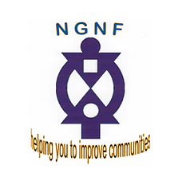

NGNF
NGNF provides funding support and consultation to Community Organisations, Charities, Not For Profit Organisations and Social Enterprises. We have been in operation since 2012 and over this period we have maintained a high success rate in helping clients to achieve funding for their projects.
We provide support to community groups and individuals to help them develop services which can have social, health and financial benefits for their communities. Regardless of the size of your organisation, whether you are well established or just setting up, we are sure NGNF can assist.
